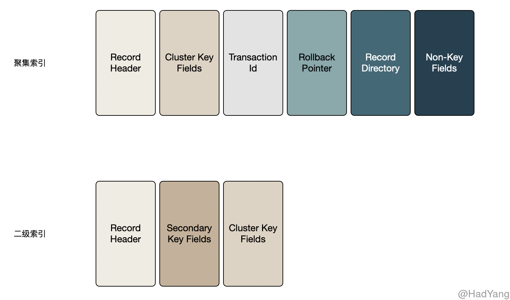
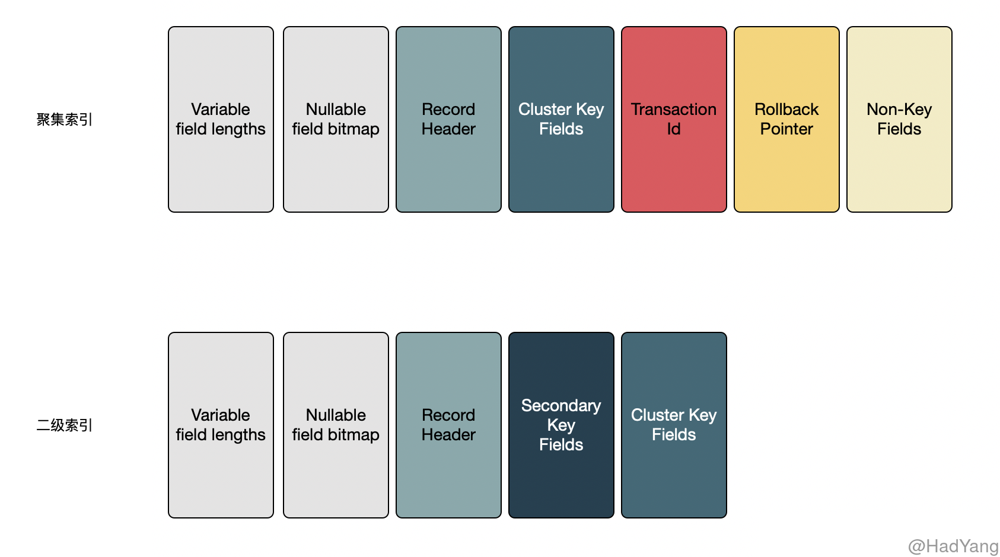

【Inoodb】行格式
文章目录
文件格式
随着 Innodb 的演进，老版本的数据文件格式已经不能支撑新特性的诉求。为方便管理降级和升级以及不同版本 MySQL 的运行，Innodb 采用命名文件格式，Innodb 目前支持两种文件格式： Antelope 和 Barracuda
- Antelope 是最原始的 Innodb 文件格式，在之前都没有名称。它支持 COMPACT 和 REDUNDANT 两种行格式
- Barracuda 是新的文件格式。它支持所有的行格式，包括新的 COMPRESSED 和 DYNAMIC 行格式
可以通过元数据表 INFORMATION_SCHEMA.INNODB_SYS_TABLES 查看表对应的文件格式和行格式
mysql> SELECT * FROM INFORMATION_SCHEMA.INNODB_SYS_TABLES WHERE NAME='test/t1'\G
*************************** 1. row ***************************
TABLE_ID: 44
NAME: test/t1
FLAG: 1
N_COLS: 6
SPACE: 30
FILE_FORMAT: Antelope
ROW_FORMAT: Compact
ZIP_PAGE_SIZE: 0
行格式
行格式决定表如何对行进行物理存储，这会影响到查询和 DML 语句的性能。当单个磁盘页能容纳越多的行，则其查询和索引性能就越好，在 Buffer Pool 中占用越少的内存，以及更新数据时越少的IO操作
每个表中的数据都是存储在各个 Page 中的，Page 组成的表排列在一个被称为B树索引的结构中。表数据和二级索引都使用 B树这种数据结构。当B树索引代表整个表时，称之为聚集索引，聚集索引按主键排列。聚集索引的节点包含整行记录数据。二级索引的节点包含 索引列 和 主键列。
一般情况下，列的数据都存储在B树节点中，但变长列是个例外。当变长列过大，导致B树的 Page 无法容纳时，会在磁盘上单独开辟 溢出页 进行存储。这些列被称为页外列（off-page columns）。页外列的值存储在溢出页的单链表，每个列都有其自己的链表，包含一个或多个溢出页。根据列的不同长度，变长列可以将全部或前缀数据存放在B树中，以免浪费存储空间和读取更多的页。
在 MySQL 中字段的大小不仅与表定义的列长度有关，还与表使用的字符集有关联。比如对于 CHAR(10) 列，在 latin1 字符集下最多只占用 10byte，而在 utf8 字符集下其占用的存储空间在 10byte ~ 40byte 范围中。
Innodb 中有四种行格式，分别为 REDUNDANT、COMPACT、DYNAMIC和COMPRESSED。
REDUNDANT
- 每条索引记录都包含 6byte 的 header，header 的作用在于链接连续的记录以及行级锁
- 记录在聚集索引上包含所有用户定义的列。额外还包含 6byte 的事务ID 以及 7byte 的回滚指针
- 如果没有定义主键，则聚集索引还会包含一个 6byte 的行ID
- 每个二级索引记录除索引列本身外，还包含主键列
- 每个记录中中包含一个指针指向每个字段。如果这些字段的总长度不超过 128byte，则指针只有 1byte，否则为 2byte。这些指针组成的数组被称为记录目录（Record Directory），指针指向的区域是记录的数据区
- 默认情况下，固定长度的列比如 CHAR(10) 以固定长度存储。 VARCHAR 的后缀空格不会被截断（那就是说 CHAR 类型会截断）
- 固定长度的列大于或等于 768byte 时，被当作变长列处理，可以 存储在溢出页上。
- Null 值在记录目（Record Directory）里会消耗 1～2byte。Null在变长列的数据区占用0byte，在固定长度列消耗“固定长度” 的空间。这样有助于 固定长度列从 空 → 非空的值更新，从而避免页分裂导致的碎片化

COMPACT
- 每条索引记录都包含 5byte 的 header 以及 变长部分，header 的作用在于链接连续的记录以及行级锁
- 记录头的变长部分包含一个 bit 向量，用于标记 NULL 列。bit 向量的大小由行中允许为 NULL 的列的个数决定，比如，由6～19列可以为 NULL，则这个 bit 向量使用 2byte。空列除 bit 向量外，不占用其他存储空间。变长部分还包含变长列的长度，根据列最大长度的不同，每个列长度占用 1～2 byte。如果所有的列都是 Not-NULL 并且都是固定长度，那么记录头不包含任何变长部分。
- 对于非NULL 变长列，记录头占用1～2byte来记录列长度。2byte 在列存储在溢出页、最大长度超过255byte、实际长度超过127byte情况下使用。对于溢出页的列 2byte 用于标记页内存储+20byte溢出页指针的长度。页内存储长度为 768 byte，所以长度为 768+20。这 20byte指针存储真正的列长度
- 记录头后紧跟着 非空列 的数据
- 记录在聚集索引上包含所有用户定义的列。额外还包含 6byte 的事务ID 以及 7byte 的回滚指针
- 如果没有定义主键，则聚集索引还会包含一个 6byte 的行ID
- 每个二级索引记录除索引列本身外，还包含主键列。如果主键列是变长的，每个二级索引的记录头都会有一个变长的部分来记录其长度，即使二级索引是定长的
- 对非变长的字符集，定长的字符列是按定长格式存储， VARCHAR 的后缀空白字符不会被截断
- 对于变长字符集（utf8mb4），Innodb 截断 CHAR(n) 的后缀空白字符，并尝试存储在 n 个字节中。如果 CHAR(n) 的值超过 n 个字节，截断后缀空白的值就是该列的最小长度。最大长度就是字符集的最大长度*n
- 为 CHAR(n) 至少保留 n 个字节，在大多数情况下都可以原地更新，减少页碎片。相比来说，REDUNDANT 则会占用列的最大可能长度。
- 当定长列超过或等于 768byte 时，会被当作变长字段，可以被存储在溢出页中。char(255) 在 utf8mb4 的编码下，最大长度就可能超过 768

DYNAMIC 行格式
在存储特性上 DYNAMIC 与 COMPACT 相同，但增强了对超长变长列的存储能力，以支持更大索引前缀。对于溢出页的存储 DYNAMIC 基于一个想法：将长数据的一部分存储在页外，等效于将整个数据放到页外。 DYNAMIC 格式会尽量将短的列存储在行内，减少溢出页的个数
- 超长的变长列（
VARCHAR VARBINARY BLOB TEXT）完全存储到页外（off-page），在聚集索引中只包含 20byte 的溢出页指针。 - 当定长列超过或等于 768byte 时，会被当作变长字段，可以被存储在溢出页中。
- 列是否存储到页外还依赖页大小和行的总长。当行非常长的时候，最长的列会被存储到页外，直到聚集索引的记录能在B树节点中至少存放两行。
- TEXT BLOB 长度小于等于 40byte 时，会存储在行内。
- 当行长度合适时，DYNAMIC 也会将整个行放入索引记录中，但是 DYNAMIC 会避免将超长的列放入索引中。
- DYNAMIC 支持索引长度为 3072byte
COMPRESSED 行格式
- COMPRESSED 行格式拥有与 DYNAMIC 相同的存储特性和能力，但支持表和索引数据的 压缩。
- COMPRESSED 行格式使用页外存储的方式与 DYNAMIC 类似，额外增加了压缩表和索引数据的存储和性能的考量，并且使用更少的空间。
- COMPRESSED 行格式通过
KEY_BLOCK_SIZE选项控制聚集索引存储的数据大小，以及溢出页存储的数据大 - COMPRESSED 支持索引长度为 3072byte
下面通过表格对比四种不同行格式的特点
| 行格式 | 长字段存储 | 空间分配 | 后缀空格 | NULL字段 | 索引长度 |
|---|---|---|---|---|---|
| REDUNDANT | 1. 定长字段的值长度超过 768byte 就会被当作变长字段，超出数据 可以 存储到溢出页 2. BLOB 和 TEXT 看实际长度，来决定是否适用溢出页 |
1. 定长字段以可能的最大长度存储，无数据字节用 0x20 填充 2. 变长字段不会预分配最大可能的存储空间 |
1. 定长字段的后缀空白会被截断 2. 变长字段的后缀空白会保留 |
1. 定长字段的NULL占用可能的最大空间 2. 变长字段的NULL不占用空间 |
768byte |
| COMPACT | 1. 定长字段的值长度超过 768byte 就会被当作变长字段，超出数据 可以 存储到溢出页 2. BLOB和TEXT看实际长度，来决定是否适用溢出页 |
1. 定长字段&变长字符->至少分配n个字 2. 定长字段&定长字符集->分配最大长度，无数据字节用0x20填充 3. 变长字段->不预分配最大可能的存储空间 |
1. 定长字段的后缀空白会被截断 2. 变长字段的后缀空白会保留 |
1. 变长和定长字段均不占用空间 | 768byte |
| DYNAMIC | 1. 对溢出数据，行内只存储指针，无前缀数据 2. BLOB 和 TEXT 小于 40byte 存储页内 |
同上 | 同上 | 同上 | 3072byte |
| COMPRESSED | 同上 | 同上 | 同上 | 同上 | 3072byte |
溢出判定
如果一个 Page 中可以放入两行数据（对于 16KB 的页来说，就是每行 8KB），那么 VARCHAR VARBINARY BLOB TEXT 类型的数据就不会放入溢出页中。两行数据不代表每行数据就占用 8192byte ，Innodb 内部还会有部分存储空间的占用。因此，对于 VARCHAR 来说最多是 8098byte，对 BLOB 和 TEXT 来说最多是 8000byte